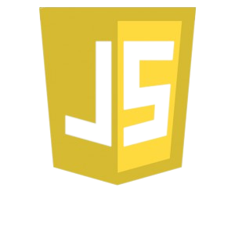
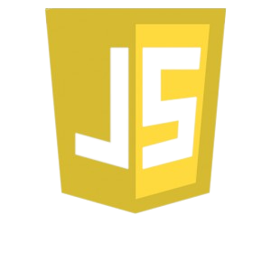

Victor Jordão
Quem sou eu
Olá, meu nome é Victor Jordão e tenho 18 anos, descobri o ramo do T.I em 2019, todavia meu primeiro contato direto mesmo veio apenas em 2022 quando me interessei em estudar sobre Front-end tornando-se um apaixonado pela área!
Meus estudos começaram por volta de setembro de 2022. Hoje exercito os principais conceitos, além disso gosto de praticar, criando ou refazendo projetos em que me inspiro ou originados por eu mesmo.
Habilidades
O que sei

 

De modo geral atualmente, tenho básicos, porém bons conhecimentos em HTML5, CSS3 e JavaScript, as três primeiras Ferramentas em que tive contato e sigo expandindo meu conhecimento sobre os mesmos. Logo de cara, me vi com anseio pelo aprendizado na parte de Front-end quando os conheci, ainda sigo estudando a fundo seus principais componentes e fundamentos. Sempre me mantendo atualizado!
Metas
O que quero
Bom, ainda que eu sinta orgulho de mim mesmo, não posso dizer que estou satisfeito com o conhecimento que possuo, por isso dentre tais metas a primeira delas é entender melhor e mais a fundo o JavaScript e suas bibliotecas.
JavaScript é essencial para o desenvolvimento Front-end e é o que torna de fato a interação com o usuário mais interessante, tenho um básico conhecimento sobre, como variáveis, funções, condições e afins. Contudo minha vontade pelo aprender me chama para mergulhar nisso, quero me aperfeiçoar e evoluir conforme o tempo, buscando coisas novas. Aprender nunca cansa!